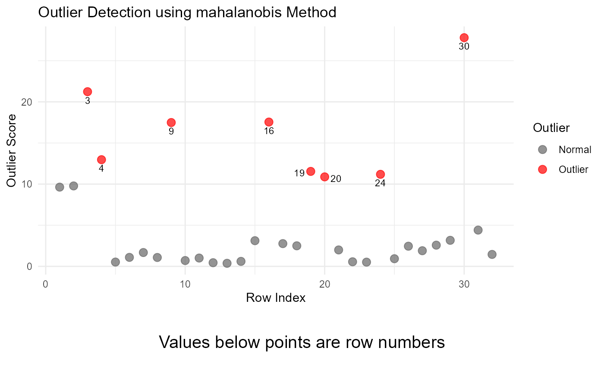
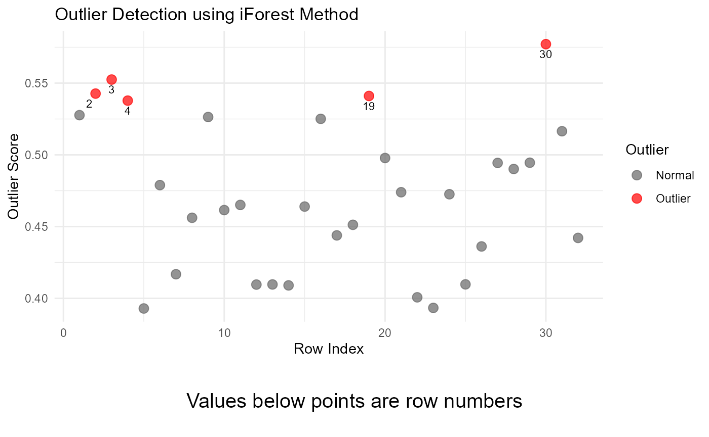

What are multivariate outliers? How do you detect them?
A multivariate outlier is an outlier that can only be detected by
looking at two or more variables in combination. The graph below shows
examples of multivariate outliers using the iris dataset
included with base R.

The red point labelled 1 on the graph is a clear example
of a multivariate outlier. This flower has a Sepal Length of 4.9 inches,
and a Petal Width of 1.7 inches, both of which seem like normal values
for Sepal Length and Petal Width. However, flowers with a Sepal Length
of around 5 inches normally have much smaller Petal Widths, as shown on
the graph above. While there are other outliers in this dataset, only
this outlier has been colored red to draw extra attention to it.
The outlier in this graph was detected using the LoF method, and more detail about that method can be provided below. This package specifically focuses on four different methods for finding multivariate outliers: kNN, LoF, mahalanobis distance, and iForest.
kNN
kNN calculates the distances between a data point and its k-nearest neighbors and assigns an outlier score based on that distance. The principle that guides kNN is that outliers lay far away from their neighbours, so each of the distances is interpreted within that context. Because some variables in the data may have much larger ranges that others (ex. a variable has a range from 1-10 and another has a range of -10000 to 10000), the data is standardized before calculating the distances.
After each of these distances is calculated, the mean for each row is calculated. The next step involves creating a threshold for declaring a point an outlier. To calculate this threshold, the function takes the mean of each row (after that row’s mean has been calculated), and adds 2 times the standard deviation of each row to that number. Outliers are considered any points with a score above the calculated threshold. Because this method relies on numeric variables, all categorical variables are removed.
Here is an example of the final output from the
multiOutliers function using the kNN method.
#>
#> Method: kNN
#> Dataset: mtcarsOutliers
#> Variables: mpg disp hp drat wt qsec
#> Row: 1 3 16
#> Outlier Score: 389.3906 557.6478 403.178
#> Message: Outliers detected
#> Option 1 : k = 5
#>
#> Five Largest Outliers Within the Provided Dataset:
#> mpg disp hp drat wt qsec scores
#> Datsun 710 22.8 -468.2171 93.0000 3.85 13.16772 18.61 557.6478
#> Lincoln Continental 10.4 460.0000 -232.3693 3.00 5.42400 17.82 403.1780
#> Mazda RX4 21.0 782.5020 110.0000 3.90 2.62000 16.46 389.3906
#> Honda Civic 30.4 75.7000 -240.5539 4.93 1.61500 18.52 312.8635
#> Maserati Bora 15.0 301.0000 335.0000 3.54 3.57000 14.60 122.3927Customizing the k parameter
The value k tells the function how many points to
consider as neighbors when identifying distances between each of the
points. The default value, 5, finds the distance between each point the
5 points that are closest to that point. The choice of k
significantly impacts the results, and smaller values are generally more
sensitive to outliers. You can supply your own value of k,
which may change the results of the function.
multiOutliers(mtcarsOutliers, method = "knn", k = 10)
#>
#> ── Summary Information ─────────────────────────────────────────────────────────
#>
#> Method: kNN
#> Dataset: mtcarsOutliers
#> Variables: mpg disp hp drat wt qsec
#> Row: 1 3 16
#> Outlier Score: 427.538 581.0315 416.7779
#> Message: Outliers detected
#> Option 1 : k = 10
#>
#> ── Dataset Information ─────────────────────────────────────────────────────────
#>
#> Five Largest Outliers Within the Provided Dataset:
#> mpg disp hp drat wt qsec scores
#> Datsun 710 22.8 -468.2171 93.0000 3.85 13.16772 18.61 581.0315
#> Mazda RX4 21.0 782.5020 110.0000 3.90 2.62000 16.46 427.5380
#> Lincoln Continental 10.4 460.0000 -232.3693 3.00 5.42400 17.82 416.7779
#> Honda Civic 30.4 75.7000 -240.5539 4.93 1.61500 18.52 331.5026
#> Maserati Bora 15.0 301.0000 335.0000 3.54 3.57000 14.60 148.4708Example Output
When using the kNN method with the default k=5, the
function returns:
-
Method: “kNN”, indicating the method used. -
Dataset: The dataset name. -
Variables: The numeric columns considered for outlier detection. -
Row: Indices of rows identified as outliers. -
Score: Mean kNN distance scores of detected outliers. -
Message: A summary message indicating whether outliers were detected. -
k: The number of nearest neighbors considered. -
Data: Displays the five highest outliers in the data used.
result <- multiOutliers(mtcarsOutliers, method = "knn")
print(result)
#>
#> ── Summary Information ─────────────────────────────────────────────────────────
#>
#> Method: kNN
#> Dataset: mtcarsOutliers
#> Variables: mpg disp hp drat wt qsec
#> Row: 1 3 16
#> Outlier Score: 389.3906 557.6478 403.178
#> Message: Outliers detected
#> Option 1 : k = 5
#>
#> ── Dataset Information ─────────────────────────────────────────────────────────
#>
#> Five Largest Outliers Within the Provided Dataset:
#> mpg disp hp drat wt qsec scores
#> Datsun 710 22.8 -468.2171 93.0000 3.85 13.16772 18.61 557.6478
#> Lincoln Continental 10.4 460.0000 -232.3693 3.00 5.42400 17.82 403.1780
#> Mazda RX4 21.0 782.5020 110.0000 3.90 2.62000 16.46 389.3906
#> Honda Civic 30.4 75.7000 -240.5539 4.93 1.61500 18.52 312.8635
#> Maserati Bora 15.0 301.0000 335.0000 3.54 3.57000 14.60 122.3927Here is an example of graphical output from this function.
plot(result)
Notes and Considerations
Numeric Data Only: The kNN method requires numeric variables. Non-numeric columns are automatically excluded.
Robustness: kNN does not assume a specific distribution of data, so it is robust to non-normality, making it a better tool to handle non-normal data than other outlier detection methods.
To learn more about kNN and how it’s used in multivariate outlier detection, visit these resources:
Local outlier factor (LoF)
The Local Outlier Factor (LoF) method detects anomalies by comparing the density of data points in their local neighborhood. Points with significantly lower density than their neighbors are flagged as potential outliers. The dbscan package is used for this implementation, which calculates LoF scores for each data point. Scores above a certain threshold (typically > 1) are indicative of stronger outliers.
LoF is particularly useful for datasets with clusters of varying density, as it considers the local density when assessing outlier scores. It supports both numeric and categorical variables, using Gower distance for mixed data types. This LoF method uses the cluster package’s daisy (Dissimilarity Matrix Calculation) function to calculate the Gower distance when necessary.
Customizing the minPts Parameter
The LoF method allows customization of the minPts
parameter, which is the minimum number of points in the local
neighborhood. Larger values result in broader neighborhoods and may
reduce sensitivity to smaller clusters. minPts defaults to
5 if not specified.
You can adjust these parameters to suit your dataset. Here’s an example:
multiOutliers(mtcarsOutliers, method = "lof", minPts = 10)
#>
#> ── Summary Information ─────────────────────────────────────────────────────────
#>
#> Method: LoF
#> Dataset: mtcarsOutliers
#> Variables: mpg cyl disp hp drat wt qsec vs am gear carb
#> Row: 1 2 3 4 6 7 10 11 15 16 17 20 24 26 27 29 30 31 32
#> Outlier Score: 1.234384 1.109279 1.052523 1.434807 1.590262 1.031151 1.000967 1.002118 1.004441 1.2053 1.015402 1.013044 1.088952 1.002205 1.043699 1.419062 1.752452 1.94842 1.017775
#> Message: Outliers detected
#> Option 1 : minPts = 10
#>
#> ── Dataset Information ─────────────────────────────────────────────────────────
#>
#> Five Largest Outliers Within the Provided Dataset:
#> mpg cyl disp hp drat wt qsec vs am gear carb
#> Maserati Bora 15.00000 8 301 335 3.540000 3.570 14.60 0 1 5 8
#> Ferrari Dino 19.70000 6 145 175 -5.146597 2.770 15.50 0 1 5 6
#> Valiant 18.10000 6 225 105 2.760000 3.460 20.22 1 0 3 1
#> Hornet 4 Drive 54.27716 6 258 110 3.080000 3.215 19.44 1 0 3 1
#> Ford Pantera L 15.80000 8 351 264 4.220000 3.170 14.50 0 1 5 4
#> scores
#> Maserati Bora 1.948420
#> Ferrari Dino 1.752452
#> Valiant 1.590262
#> Hornet 4 Drive 1.434807
#> Ford Pantera L 1.419062Example Output
When using the LoF method with the default minPts = 5,
the function returns:
-
Method: “LoF”, indicating the method used. -
Dataset: The dataset name. -
Variables: The columns considered in the analysis. -
Row: Indices of rows identified as outliers. -
Score: LoF scores for each detected outlier. -
Message: A summary message indicating whether outliers were detected. -
minPts: The parameter value used for the local neighborhood. -
Data: Displays the five highest outliers in the data used.
result <- multiOutliers(mtcarsOutliers, method = "lof")
result
#>
#> ── Summary Information ─────────────────────────────────────────────────────────
#>
#> Method: LoF
#> Dataset: mtcarsOutliers
#> Variables: mpg cyl disp hp drat wt qsec vs am gear carb
#> Row: 1 2 3 4 6 7 10 11 15 16 17 20 24 26 27 29 30 31 32
#> Outlier Score: 1.234384 1.109279 1.052523 1.434807 1.590262 1.031151 1.000967 1.002118 1.004441 1.2053 1.015402 1.013044 1.088952 1.002205 1.043699 1.419062 1.752452 1.94842 1.017775
#> Message: Outliers detected
#> Option 1 : minPts = 10
#>
#> ── Dataset Information ─────────────────────────────────────────────────────────
#>
#> Five Largest Outliers Within the Provided Dataset:
#> mpg cyl disp hp drat wt qsec vs am gear carb
#> Maserati Bora 15.00000 8 301 335 3.540000 3.570 14.60 0 1 5 8
#> Ferrari Dino 19.70000 6 145 175 -5.146597 2.770 15.50 0 1 5 6
#> Valiant 18.10000 6 225 105 2.760000 3.460 20.22 1 0 3 1
#> Hornet 4 Drive 54.27716 6 258 110 3.080000 3.215 19.44 1 0 3 1
#> Ford Pantera L 15.80000 8 351 264 4.220000 3.170 14.50 0 1 5 4
#> scores
#> Maserati Bora 1.948420
#> Ferrari Dino 1.752452
#> Valiant 1.590262
#> Hornet 4 Drive 1.434807
#> Ford Pantera L 1.419062Here is an example of graphical output from this function.
plot(result)
Notes and Considerations
Sensitivity to minPts: The choice of
minPtssignificantly influences results. A value too small might result in over-sensitivity, while a value too large might overlook smaller clusters of anomalies.Mixed Data Types: If the dataset contains categorical variables, the method automatically switches from Euclidean to Gower distances for calculating pairwise dissimilarities. Ensure the data is properly encoded.
Interpreting LoF Scores: Scores greater than 1.5 typically indicate potential outliers. Adjust the threshold based on the characteristics of your dataset.
To learn more about LoF & Gower distance and how it’s used in multivariate outlier detection, visit these resources:
- Medium.com LoF Explained
- Gower Distance Gower Distance Explained
- DBSCAN Documentation
Mahalanobis
The Mahalanobis distance measures the distance of a point from the center of a multivariate distribution while accounting for the correlation between variables. This method identifies outliers by calculating how far each point is from the data’s multivariate mean, considering the covariance matrix of the data. This approach is particularly useful when variables are highly correlated or have different scales.
Before using the Mahalanobis distance, the function automatically selects numeric columns from the dataset. Non-numeric variables are excluded, ensuring compatibility with the method. The distances are then calculated using the outliers_mahalanobis function from the Routliers package. The Mahalanobis distances that are returned by the function represent the distance from the point to the center of the distribution.
Customizing the alpha parameter
The alpha parameter determines the significance level
for outlier detection. The default alpha value is 0.1,
which corresponds to a 95% confidence level. The function calculates the
chi-squared distribution for these points, and removes those with
distances outside of the 95% confidence interval range.
Lower values (e.g., alpha = 0.01) result in stricter
thresholds, identifying fewer points as outliers while higher values are
less strict, identifying more observations as outliers. The function
will return the five observations with the largest outliers regardless
of the value of alpha. You can modify alpha as follows:
multiOutliers(mtcarsOutliers, method = "mahalanobis", alpha = 0.01)
#>
#> ── Summary Information ─────────────────────────────────────────────────────────
#>
#> Method: mahalanobis
#> Dataset: mtcarsOutliers
#> Variables: mpg disp hp drat wt qsec
#> Row: 3 9 16 30
#> Outlier Score: 21.23573 17.48584 17.54522 27.79833
#> Message: Outliers detected
#> Option 1 : alpha = 0.01
#>
#> ── Dataset Information ─────────────────────────────────────────────────────────
#>
#> Five Largest Outliers Within the Provided Dataset:
#> mpg disp hp drat wt qsec
#> Ferrari Dino 19.70000 145.0000 175.0000 -5.146597 2.77000 15.500000
#> Datsun 710 22.80000 -468.2171 93.0000 3.850000 13.16772 18.610000
#> Lincoln Continental 10.40000 460.0000 -232.3693 3.000000 5.42400 17.820000
#> Merc 230 22.80000 140.8000 95.0000 3.920000 3.15000 3.655936
#> Hornet 4 Drive 54.27716 258.0000 110.0000 3.080000 3.21500 19.440000
#> scores
#> Ferrari Dino 27.79833
#> Datsun 710 21.23573
#> Lincoln Continental 17.54522
#> Merc 230 17.48584
#> Hornet 4 Drive 12.96992Example Output
When using the Mahalanobis method with the default
alpha = 0.1, the function returns:
-
Method: “mahalanobis”, indicating the method used. -
Dataset: The dataset name. -
Variables: The numeric columns considered. -
Row: Indices of rows identified as outliers. -
Score: Mahalanobis distance scores of detected outliers. -
Message: A summary message indicating whether outliers were detected. -
Alpha: The significance level used. -
Data: Displays the five highest outliers in the data used.
result <- multiOutliers(mtcarsOutliers, method = "mahalanobis")
print(result)
#>
#> ── Summary Information ─────────────────────────────────────────────────────────
#>
#> Method: mahalanobis
#> Dataset: mtcarsOutliers
#> Variables: mpg disp hp drat wt qsec
#> Row: 3 4 9 16 19 20 24 30
#> Outlier Score: 21.23573 12.96992 17.48584 17.54522 11.54579 10.88054 11.19061 27.79833
#> Message: Outliers detected
#> Option 1 : alpha = 0.1
#>
#> ── Dataset Information ─────────────────────────────────────────────────────────
#>
#> Five Largest Outliers Within the Provided Dataset:
#> mpg disp hp drat wt qsec
#> Ferrari Dino 19.70000 145.0000 175.0000 -5.146597 2.77000 15.500000
#> Datsun 710 22.80000 -468.2171 93.0000 3.850000 13.16772 18.610000
#> Lincoln Continental 10.40000 460.0000 -232.3693 3.000000 5.42400 17.820000
#> Merc 230 22.80000 140.8000 95.0000 3.920000 3.15000 3.655936
#> Hornet 4 Drive 54.27716 258.0000 110.0000 3.080000 3.21500 19.440000
#> scores
#> Ferrari Dino 27.79833
#> Datsun 710 21.23573
#> Lincoln Continental 17.54522
#> Merc 230 17.48584
#> Hornet 4 Drive 12.96992Here is an example of graphical output from this function.
plot(result)
Notes and Considerations
Numeric Data Only: The Mahalanobis method requires numeric variables. Non-numeric columns are automatically excluded.
Multivariate Normality: This method assumes the data follows a multivariate normal distribution. Deviations from normality or the presence of extreme outliers may affect the results.
To learn more about Mahalanobis distance and how it’s used in multivariate outlier detection, visit these resources:
- Statisticshowto.com Mahalanobis Distance Explained
- Builtin.com
iForest
Isolation Forest (iForest) is an unsupervised machine learning algorithm designed to detect anomalies in data and is implemented through functions in the isotree package. It works by creating random partitions of the data and measuring how quickly each point can be isolated. Points that are isolated faster (using fewer splits) are more likely to be outliers.
The iForest algorithm is particularly well-suited for handling high-dimensional data and works with both quantitative and categorical variables. It is robust to noise and scales efficiently for large datasets.
Customizing Parameters
The iForest method allows customization of two main parameters:
ntrees: The number of trees in the isolation forest. A
higher value increases precision but also computation time. Default is
100.
n: The number of points to return as outliers. Default
is 5.
Here’s an example of how you can modify these parameters:
multiOutliers(mtcarsOutliers, method = "iforest", ntrees = 200, n = 10)
#>
#> ── Summary Information ─────────────────────────────────────────────────────────
#>
#> Method: iForest
#> Dataset: mtcarsOutliers
#> Variables: mpg cyl disp hp drat wt qsec vs am gear carb
#> Row: 1 2 3 4 9 16 19 29 30 31
#> Outlier Score: 0.5888639 0.5495799 0.5468237 0.5310991 0.5296226 0.5276686 0.5254197 0.520464 0.5148695 0.4996576
#> Message: Outliers detected
#> Option 1 : ntrees = 200
#> Option 2 : n = 10
#>
#> ── Dataset Information ─────────────────────────────────────────────────────────
#>
#> Five Largest Outliers Within the Provided Dataset:
#> mpg cyl disp hp drat wt qsec vs am
#> Ferrari Dino 19.70000 6 145.0000 175.0000 -5.146597 2.77000 15.50 0 1
#> Honda Civic 30.40000 4 75.7000 -240.5539 4.930000 1.61500 18.52 1 1
#> Datsun 710 22.80000 4 -468.2171 93.0000 3.850000 13.16772 18.61 1 1
#> Mazda RX4 Wag 52.22202 6 160.0000 110.0000 3.555697 2.87500 17.02 0 1
#> Hornet 4 Drive 54.27716 6 258.0000 110.0000 3.080000 3.21500 19.44 1 0
#> gear carb scores
#> Ferrari Dino 5 6 0.5888639
#> Honda Civic 4 2 0.5495799
#> Datsun 710 4 1 0.5468237
#> Mazda RX4 Wag 4 4 0.5310991
#> Hornet 4 Drive 3 1 0.5296226Example Output
When using the iForest method with the default
ntrees = 100 and n = 5 the function
returns:
-
Method: “iForest”, indicating the method used. -
Dataset: The dataset name. -
Variables: The numeric columns considered. -
Row: Indices of rows identified as outliers. -
Score: Isolation scores for each detected outlier. -
Message: A summary message indicating whether outliers were detected. -
ntrees: The number of trees in the isolation forest -
n: The number of points to return as outliers -
Data: Displays the five highest outliers in the data used.
result <- multiOutliers(mtcarsOutliers, method = "iforest")
result
#>
#> ── Summary Information ─────────────────────────────────────────────────────────
#>
#> Method: iForest
#> Dataset: mtcarsOutliers
#> Variables: mpg cyl disp hp drat wt qsec vs am gear carb
#> Row: 2 3 4 19 30
#> Outlier Score: 0.5771537 0.5524719 0.5426933 0.5410328 0.5378022
#> Message: Outliers detected
#> Option 1 : ntrees = 100
#> Option 2 : n = 5
#>
#> ── Dataset Information ─────────────────────────────────────────────────────────
#>
#> Five Largest Outliers Within the Provided Dataset:
#> mpg cyl disp hp drat wt qsec vs am
#> Ferrari Dino 19.70000 6 145.0000 175.0000 -5.146597 2.77000 15.50 0 1
#> Datsun 710 22.80000 4 -468.2171 93.0000 3.850000 13.16772 18.61 1 1
#> Mazda RX4 Wag 52.22202 6 160.0000 110.0000 3.555697 2.87500 17.02 0 1
#> Honda Civic 30.40000 4 75.7000 -240.5539 4.930000 1.61500 18.52 1 1
#> Hornet 4 Drive 54.27716 6 258.0000 110.0000 3.080000 3.21500 19.44 1 0
#> gear carb scores
#> Ferrari Dino 5 6 0.5771537
#> Datsun 710 4 1 0.5524719
#> Mazda RX4 Wag 4 4 0.5426933
#> Honda Civic 4 2 0.5410328
#> Hornet 4 Drive 3 1 0.5378022Here is an example of graphical output from this function.
plot(result)
Notes and Considerations
Scalability: Isolation Forest is designed to handle large datasets efficiently, making it suitable for high-dimensional data. However, performance may depend on the ntrees parameter, as higher values can increase computation time.
No Assumptions on Data Distribution: Unlike some statistical methods, iForest does not assume a specific data distribution. This makes it robust for detecting outliers in diverse datasets.
Handles Mixed Data Types: iForest can process both numeric and categorical variables. However, ensure your data is properly encoded or formatted as required by the isotree package.
Interpretation of Scores: Higher isolation scores indicate stronger anomalies. You may need to determine an appropriate threshold for your dataset when interpreting the results.
To learn more about Isolation Forest and how it’s used in multivariate outlier detection, visit these resources:
- Medium.com iForest Explained
- Andy McDonald on YouTube